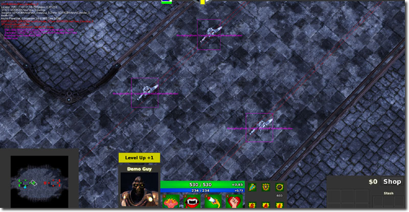
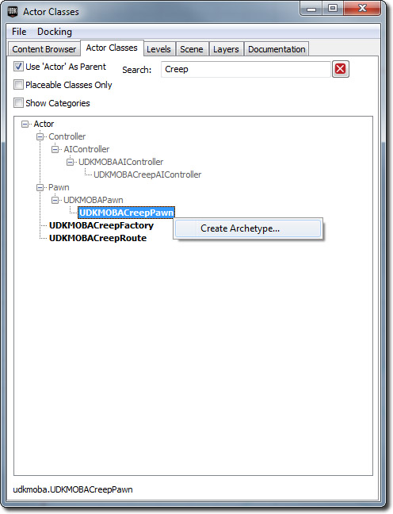
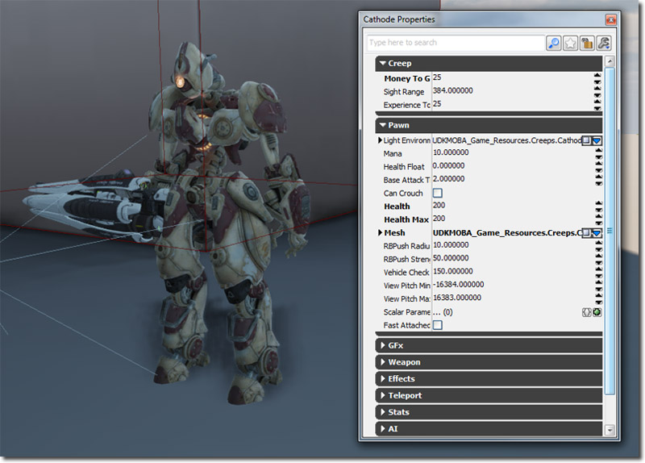

UDN
Search public documentation:
MOBAKitCreeps
日本語訳
中国翻译
한국어
Interested in the Unreal Engine?
Visit the Unreal Technology site.
Looking for jobs and company info?
Check out the Epic games site.
Questions about support via UDN?
Contact the UDN Staff
中国翻译
한국어
Interested in the Unreal Engine?
Visit the Unreal Technology site.
Looking for jobs and company info?
Check out the Epic games site.
Questions about support via UDN?
Contact the UDN Staff
MOBA Starter Kit - Creeps
Last tested against UDK May, 2012
Overview
Creeps are non player controlled characters which have simplistic AI so that they navigate in the map, target and attack near by enemy creeps, heroes and structures. The relevant classes are:
- UDKMOBACreepAIController - This class handles all of the artificial intelligence for a creep pawn.
- UDKMOBACreepFactory - This class handles the spawning of the creeps and monitors how many creeps there are within the map that have been spawned by this factory.
- UDKMOBACreepPawn - This class is the pawn which is the physical representation of the creep.
- UDKMOBACreepRoute - This class is used to indicate part of the route that a creep should follow.
Debugging
 If you need extra information about what creeps are doing at any given time, you can enable debug mode by opening the console, by using the ~ key and then typing in showdebug aicreep. This will draw lines to where the creep are wanting to move to and text which shows what state and state block the creep is in. You can also debug the bounding boxes generated for the creeps by using showdebug boundingboxes. This will draw a purple box which represents the bounding box.
UDKMOBACreepAIController
UDKMOBACreepAIController is the "brains" that controls what creeps will be doing at any given moment. AI Controllers will simply run a function at a consistent tick rate and evaluate what to do. AI Controllers also receive events which allow them to respond to events that happen around them.
Spawning the creep
Creeps are only spawned from a level placed UDKMOBACreepFactory::SpawnCreepTimer(). When UDKMOBACreepFactory::SpawnCreepTimer() spawns the creep pawn, the creep pawn will automatically spawn a UDKMOBAAIController using Pawn::SpawnDefaultController() which is called in UDKMOBAPawn::PostBeginPlay(). When UDKMOBAAIController is spawned, it will automatically possess and take control of the creep pawn. From there UDKMOBACreepFactory::SpawnCreepTimer() will then call UDKMOBACreepAIController::Initialize(). This function sets up the AI controller by caching commonly used variables, setting up the AI loop and initializing the Actors which help handle events.WhatToDoNext()
UDKMOBAAIController::WhatToDoNext() is the main AI loop function. This is currently setup to execute every 0.25f seconds for as long as the creep pawn is alive. The main AI loop is quite simple as creeps only have two modes, either they are moving along the predefined creep route or they are attacking an enemy creep, hero or tower. First the creep evaluates if the current enemy reference is valid. If it is not valid, then the enemy reference is cleared. If the enemy reference is invalid (is equal to None) then the creep will do a basic search within it's visible attack interfaces array to see if the creep should begin attacking any of them. If any of them is valid to be attacked, then the creep AI Controller will enter the AttackingCurrentEnemy state. Otherwise, if no enemies are valid for attacking, then the creep AI controller will enter the MovingAlongRoute state.VisibleAttackInterfaces Array
The VisibleAttackInterfaces array is an array of all of the Actors that implement UDKMOBAAttackInterface that the creep can 'see'. Creep vision is updated using a trigger. This was used over a foreach iterator per tick as it proved better performing on Mobile devices. The trigger works by simply attaching itself to the creep pawn. When an Actor touches the trigger (the trigger has a cylinder collision component), then InternalOnSightTriggerTouch() is called. This function adds the Actor to the VisibleAttackInterfaces array if it meets the criteria. When an Actor untouches the trigger, then InternalOnSightTriggerUnTouch is called. This emulates vision for the creep in an event based manner.MovingAlongRoute State
In this state creeps are simply following a predefined route given to them via the UDKMOBACreepFactory that spawned them. This is done by using SetDestinationPosition() and SetFocalPoint(). These functions were used over MoveTo(), MoveToward() and their other variations as it resulted in more reliable behavior. In native code, setting the destination position makes the AIController adjust its pawn's velocity and acceleration so that the pawn will move towards the destination position. Since the creeps are going to be moving in a predefined manner, it was much easier to do it this way. When a pawn reaches the destination position, ReachedPreciseDestination() is called. When the happens, the state jumps down to the HasReachedDestination block. The reason why the destination position's Z is adjusted every Tick() was to accommodate for terrain that wasn't flat. For a pawn to have reached its destination position, the Z position of the pawn also had to be within a margin of error to the destination position. Because MOBA's are technically a 2D game (top down), the Z information isn't always passed to the movement coordinates which previously caused pawns to stall.Begin Block
This block ensures that the creep is valid and is in the right physics state. If it isn't, then it will simply stop execution for this tick, and the reevaluate the next tick. If CreepPawn is none, then it will go down to the End block.MoveDirect Block
This block tells the creep to move directly to the destination position if it can by setting bPreciseDestination to true. Setting this boolean enables the behavior where controllers will automatically adjust the pawn's velocity and acceleration.WaitingForReachedDestinationNotification Block
This block simply has the creep looping. Sleep() is used to prevent infinite loops. This block is eventually exited, when ReachedPreciseDestination() is called.HasReachedDestination Block
This block handles moving to the next point in the route. This is done by grabbing the next Actor in the route list within the Route Actor referenced in UDKMOBACreepFactory.End Block
AttackingCurrentEnemy State
This is defined in UDKMOBAAIController. Please read [[]] for more information about this state.UDKMOBACreepFactory
Creep factories is an Editor placeable class which is responsible for spawning creeps, maintaining the population of the creeps and providing other information to creeps.
Functions
- PostBeginPlay() - Called when the creep factory is initialized bu the world.
- CreepDied() - Called when a creep spawned by this factory has been killed. This is used to maintain MaximumCreepCount.
- SpawnCreepTimer() - Called by a timer, which has it's interval set to SpawnInterval. This function is responsible for spawning the creep.
Variables
- PawnArchetype - Archetype of UDKMOBACreepPawn to spawn.
- SpawnInterval - Time, in seconds, between each creep spawning. This could also be considered the rate at which creeps spawn.
- Route - Reference to the route that all creeps spawned by this factory should use. See below to learn how to create new creep routes.
- MaximumCreepCount - Maximum amount of creeps that this factory can have in the game at any point in time. This helps level designers to control population counts for performance reasons.
- TeamIndex - Index of the team that owns all of the creeps spawned by this factory.
UDKMOBACreepPawn
This class is the physical representation of a creep in the game world.
Functions
- PostBeginPlay() - This function is called by native code when the pawn should be initialized. It sets the occlusion color and adds any default inventory to the creep. It only sets the occlusion color if the creep instance exists on a client or stand alone game (it won't be set on the dedicated server).
- Died() - This function is called when the creep has died. If an enemy hero killed the pawn, then experience is given out to nearby enemy heroes. The amount of experience given is shared among the heroes found. If the hero who killed the creep is on the same team, then a deny point is given to that hero. Otherwise, money is given to that hero. After that, the function just cleans up the creep by informing relevant classes that it has died, and by also clearing any references. If the platform is on the PC, then the creep is rag dolled and is automatically destroyed later on. Otherwise the creep is destroyed.
- GetTeamNum() - This returns the team that the creep belongs to. If the creep factory exists, then it will use its team index. Otherwise it will just call the super.
- BotFire() - This functions causes the creep to fire its weapon.
- GetMinimapLayer() - This function returns EML_Creeps as this is the layer that the creep mini map icons should exist on.
- UpdateMinimapIcon() - This function updates the mini map icon given to it. It simply ensures that the GFx movie clip is at the right frame.
- IsValidToAttack() - This returns true if the creep is able to be attacked.
- GetTouchPriority() - This returns the touch priority of the creep. Touch priorities are used so that the player's touches, either by the mouse or touch pad, can select actors that are of more importance.
Variables
- MoneyToGiveOnKill - Amount of money to give when this creep is killed.
- SightRange - Sight range of this creep. This is used by the AI as a visibility radius check.
- ExperienceToGiveOnKill - Amount of experience to give when this creep is killed.
Creating a new creep archetype
To create a new creep archetype, open the Content Browser. Go to the Actor Classes tab. In the search box type in "Creep" to filter out all of the other results. Right click on UDKMOBACreepPawn and select "Create Archetype..." from the context menu. Fill in the text fields of where you want to store the archetype and press OK.  The easiest way to set up your creep archetype is to simply drag and drop the archetype from the Content Browser to somewhere in the world. Double click on the archetype in the Content Browser to open up the archetype's properties window. As you set properties in the archetype's properties window, they will propagate through to the instance in the world. Continue to tweak and change things until you get what you want. UDKMOBACreepRoute
This is an Editor placeable class which represents a part of the route that the creep should follow when it is not attacking an enemy creeps, heroes or structures (such as towers). The reason why this Actor does not extend from something like NavigationPoint as these points did not need to affect the navigation data in the map.